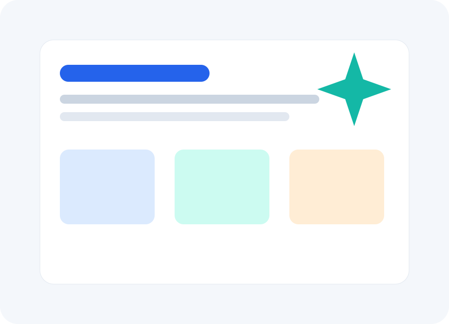
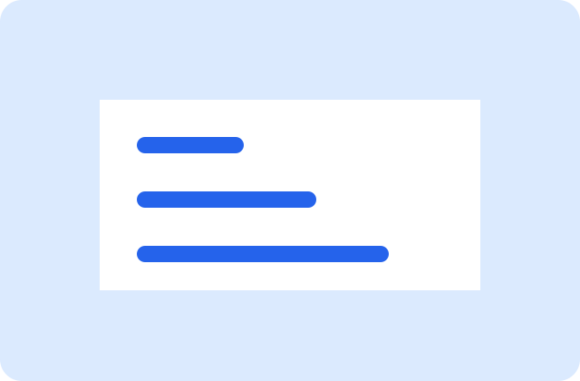
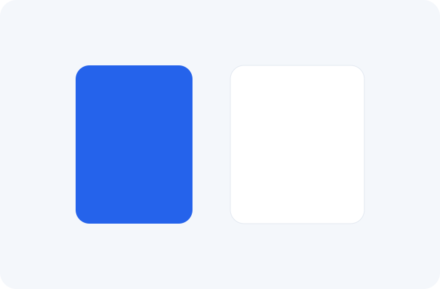
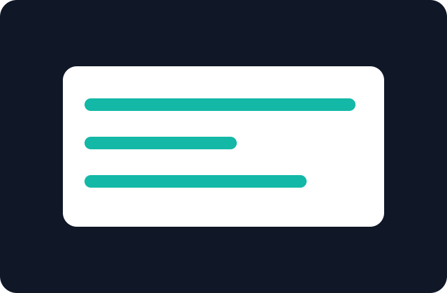
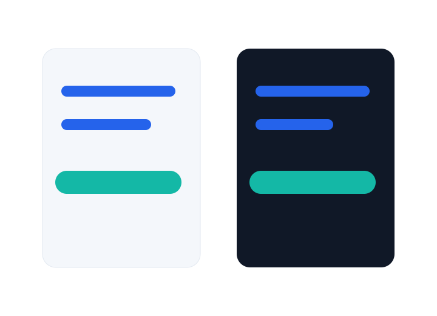
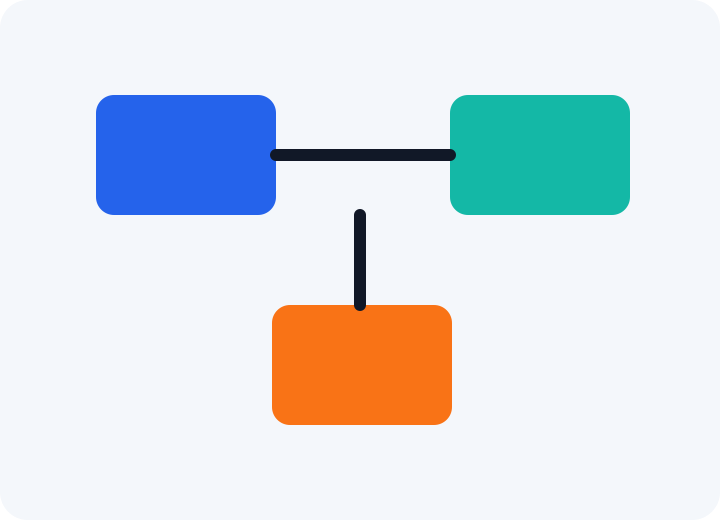

Strategy
What a useful commerce brief should include
Goals, audience, pages, integrations, and launch decisions that keep a build on track.

Service
Editorial page systems, conversion-aware layouts, and a sharper visual hierarchy for service brands.

Service
Maintainable WordPress builds that separate source, template parts, and compiled assets cleanly.

Service
Storefront structure, product discovery, cart flows, and commerce-focused page composition.

Service
Reframe a dated site into a clearer story with sharper proof, navigation, and page flow.
Service
Connect forms, analytics, and internal workflows so the site supports real operations.

Service
Retained updates, maintenance, and improvement cycles that keep the site dependable.


Strategy
Goals, audience, pages, integrations, and launch decisions that keep a build on track.

Design
How editorial rhythm and service hierarchy can guide visitors without pressure.

Development
Content, redirects, forms, performance, and QA checks to review before release.

Results
Early signals that help teams improve content, calls to action, and support workflows.
Circuit Commerce Studio
Circuit Commerce Studio designs, builds, and supports service-business websites with clear navigation, useful content systems, accessible interactions, and practical launch workflows.

Featured work

Strategy

Design

Development
Positioning
Circuit Commerce Studio focuses on the practical pieces service businesses need: clear service pages, credible work presentation, useful articles, accessible forms, and a WordPress structure that can keep growing after launch.
The result is a content-forward site that feels polished without burying visitors in decorative complexity.
Services
Editorial page systems, conversion-aware layouts, and a sharper visual hierarchy for service brands.
View serviceMaintainable WordPress builds that separate source, template parts, and compiled assets cleanly.
View serviceStorefront structure, product discovery, cart flows, and commerce-focused page composition.
View serviceReframe a dated site into a clearer story with sharper proof, navigation, and page flow.
View serviceConnect forms, analytics, and internal workflows so the site supports real operations.
View serviceRetained updates, maintenance, and improvement cycles that keep the site dependable.
View serviceProcess
Inquiry work is documented with clear decisions, next actions, and review points.
Discovery work is documented with clear decisions, next actions, and review points.
Planning work is documented with clear decisions, next actions, and review points.
Design work is documented with clear decisions, next actions, and review points.
Build work is documented with clear decisions, next actions, and review points.
Launch work is documented with clear decisions, next actions, and review points.
Support work is documented with clear decisions, next actions, and review points.
Featured work filter
Strategy
A reorganized site plan that clarified service pages, lead paths, and editorial priorities.
Design
A modern visual system with calmer navigation, stronger page hierarchy, and reusable sections.
Development
A maintainable theme build using modular PHP, SCSS source files, and compiled production bundles.
Integration
Structured forms and admin views that made new website inquiries easier to review and export.
Support
A support workflow for keeping content accurate, pages current, and small improvements moving.
Results
Navigation and CTA updates that made important actions clearer without overstating outcomes.
Featured case study
This representative case study shows the kind of work the theme supports: a scattered service site became a more direct system of service pages, proof points, content prompts, and inquiry paths.

Before and after
Engagement options
Strategy, sitemap, content priorities, and launch requirements for teams preparing a build.
Discuss fitDesign and WordPress implementation for a focused business website or service section.
Discuss fitRefinement, support, accessibility checks, and content improvements after launch.
Discuss fit
Business solution
Circuit Commerce Studio pages connect service explanations, proof, process notes, FAQs, and forms so visitors can understand fit before reaching out.
Explore servicesCustomer experience
You get a clear conversation about goals, content, decision makers, and practical scope.
Work is reviewed through focused checkpoints that keep design, content, and development aligned.
Launch notes, support options, and improvement priorities help the site stay useful.
Proof without invented testimonials
Keyboard states, semantic sections, and reduced-motion handling are built into the theme.
Template parts, SCSS source files, and local assets keep the site easier to inspect.
No runtime CDN assets or machine-specific paths are required for the public theme.
Resources
Strategy
Goals, audience, pages, integrations, and launch decisions that keep a build on track.
Design
How editorial rhythm and service hierarchy can guide visitors without pressure.
Development
Content, redirects, forms, performance, and QA checks to review before release.
Results
Early signals that help teams improve content, calls to action, and support workflows.
FAQ
A clear business goal, decision maker, available content, and any technical requirements are enough to begin discovery.
The theme is structured around reusable templates and WordPress-managed content so routine updates can stay practical.
Timelines depend on scope, content readiness, review cycles, and integrations. The process section is designed to make those dependencies visible early.
Yes. Support can focus on cleanup, accessibility, content improvements, maintenance planning, or targeted rebuilds.
Post-launch work can include issue review, documentation, content support, and a prioritized improvement list.
The service template includes a form that passes the related service identifier with each submission.
Use the contact form with a short project summary and the most important outcome you need the website to support.
Next step
Share the project stage, the audience, and the business action your site needs to support.